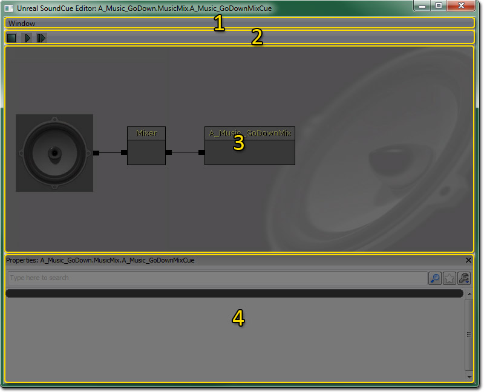
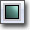
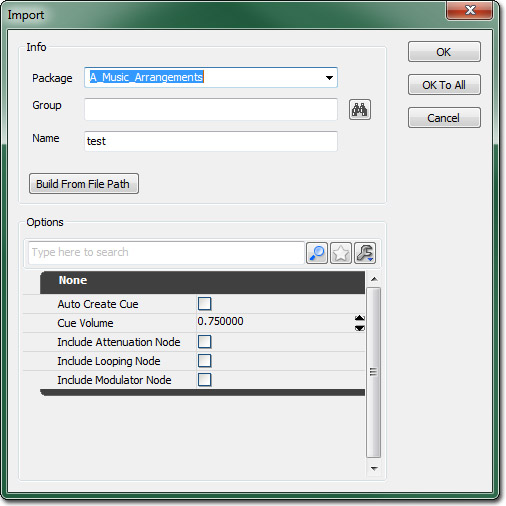

UDN
Search public documentation:
SoundCueEditorUserGuideCH
English Translation
日本語訳
한국어
Interested in the Unreal Engine?
Visit the Unreal Technology site.
Looking for jobs and company info?
Check out the Epic games site.
Questions about support via UDN?
Contact the UDN Staff
日本語訳
한국어
Interested in the Unreal Engine?
Visit the Unreal Technology site.
Looking for jobs and company info?
Check out the Epic games site.
Questions about support via UDN?
Contact the UDN Staff
虚幻声效编辑器用户指南
概述
打开声效编辑器
声效编辑器界面

菜单条
窗口
- Properties(属性) - 切换属性面板的显示状态。
工具条
| 图标 | 描述 |
|---|---|
|  | 停止播放声效。 |
| 只播放当前在音频节点图中选中的节点。 | |
 | 播放整个声效。 |
音频节点图
这个界面显示了通过使用相互连接的代表音频控制模块和音频文件的 Node 组成的从右到左的音频信号通道。虚拟的转接线通过以任何顺序或结合的方式把模块连接到一起来完成信号的转接。Speaker（扬声器）图标代表了音频的最后输出，即该输出便是游戏中听到声音，所以通常该图标放置在信号通道的最左侧。源音频文件 (Sound Node Wave) 通常放置在信号通道的最右端。可以使用在编辑窗口上部的播放按钮来预览播放效果，但单向箭头播放源 Sound Node Wave，双向箭头播放 SoundCues（声效）的最终输出。 通过在声效编辑器的任何地方右击并选择需要的节点，可以添加各种各样的节点。 SoundCue 在声效编辑器中创建的排列被保存为一个 SoundCue。 Sound Node Wave（声音节点波形） Sound Node Wave 是导入到 SoundCue 编辑器中的音频文件的框图表示。当在内容浏览器的对象窗口中选择需要的音频文件后，可以通过右击声效编辑器的任何地方来把它添加到一个 SoundCue 上。尽管 Sound Node Wave 的音量和音调控制存在，但是它们却不能在声效编辑器中进行编辑，因为参数的改变将会影响使用同样 Sound Node Waves 的其它 Cues。但是它们在导入时的组打包系统中提供。所有的 Sound Nodes（声音节点）的默认音量为 0.75、音调为 1.00。 Speaker Node（扬声器节点） 声效编辑器中的扬声器图标是 Speaker Node（扬声器节点）。点击它将会显示 Cue Volume + Pitch（音量+音调）设置，用于管理相关 Cue 的音量。这将影响这个 Cue 中包含的所有音频的输出，对于使用了Mixer(混合)或Random(随机)节点的多个 Sound Node Waves（声音节点波形），可以通过添加 Modulator Nodes（调制器节点）基于每个层来完成独立的音量和音调的控制。属性面板
控制
鼠标控制
键盘控制
热键
导入声音

- 在内容浏览器中，使用过滤确保 SoundCue 可见。
- 选择内容浏览器左下角的 Import（导入） 按钮或在内容浏览器中右击空白区域时出现的关联菜单顶部 Import（导入） 。
- 打开 Import（导入） 对话框；定位要导入的音频文件并选择 Open（打开） 来添加文件。
- 打开 Import Property（导入属性） 对话框。输入以下信息：
- Package（包） - 包的名称。
- Group（组） - 组的名称，组用于组织和批控制。
- Name（名称） - 音频文件的名称。
- AutoCreateCue（自动创建 Cue） - 如果选中这项，导入时将会自动基于每个音频文件创建一个 SoundCue（声效）。
- Cue Volume（声效音量） - 它可以设置 Speaker Nodes Cue 音量。
- Include [Attenuation / Looping / Modulator] Node - 如果勾选，导入将会使用 [Attenuation / Looping / Modulator] Nodes 为每个文件创建一个 SoundCue。
- 当导入时，选择 OK（确定） 在单独的文件上调整属性；或者选择 OK to All（应用到所有） 来把当前的属性应用到所有导出的 SoundCues中。